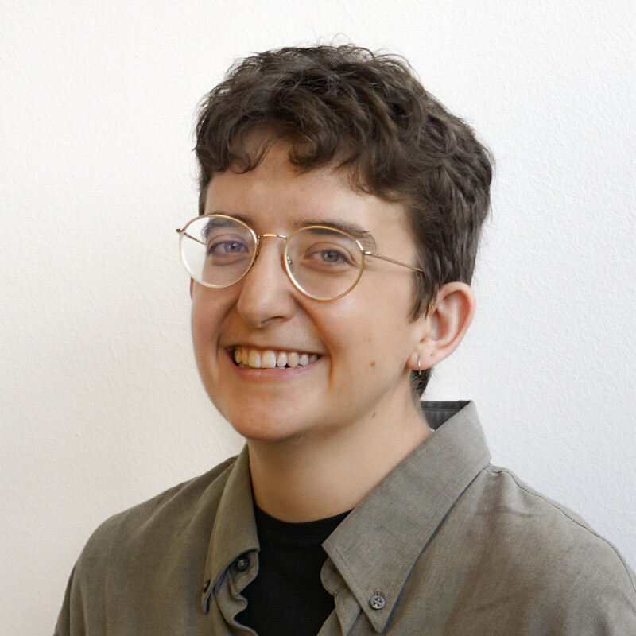

R!sk 2026 Abstracts
JD Long
CTO at Palomar, co-author of R Cookbook: Proven Recipes for Data Analysis, Statistics, and Graphics

Keynote: When Everyone Can Code, What’s a Quant Still For?
Date & Time: February 18 at 8:00am, Eastern
Abstract
Quant risk is in a weird new place: code is no longer the bottleneck. When LLMs make it easy for basically anyone to produce working R or Python code, the question stops being “can we build it?” and becomes “can we trust it, explain it, and reproduce it?”
In this keynote I’ll argue that what matters most now is system architecture, validation, and ownership, and all three get harder (and more important) when building gets cheap. Architecture isn’t just “tech design,” it’s policy: it nudges humans and LLMs to write code that’s modular, reviewable, and easy for someone else to verify. Validation has to level up too. LLM-assisted workflows are great at producing something that looks right very quickly. However, testing can’t be the cleanup step at the end. We need strong automated tests, input/data checks, and backtesting that’s built into the way work ships.
But it’s not only about tests. It’s also about reproducibility: pinned environments, versioned data, and the ability to rerun a result and get the same answer—because if you can’t reproduce it, you can’t audit it, and you can’t own it. And as more people can push code, governance has to scale: clear code ownership, review gates, protected pipelines, and sensible guardrails that keep velocity high without turning production into a free-for-all. This is where the research/production line matters: experiments should be easy and encouraged; production should be boring, controlled, and observable.
Finally, we need a culture shift. The computer isn’t responsible for your results. The IDE didn’t do it. The model didn’t do it. We did. In an “everyone can code” world, excellence looks less like personal wizardry and more like systems thinking: designing workflows where the right thing is the easy thing, and where accountability is clear when things go wrong. The goal isn’t to slow down. The goal is to make speed safe.
Bio
JD Long is CTO at Palomar, He says “I’m the guy who can build a Monte Carlo model, help parallelize the model to run on cloud services and then stand in front of a group of business leaders and put the work in context where everyone understands. My super power is thinking probabilistically, understanding risk, and communicating clearly.”
JD is widely known in the R community for his practical focus on building real-world risk and insurance models and for helping large organizations adopt R and modern analytics practices. He is a frequent speaker at R conferences and meetups, and his work has been featured in the R Journal and other publications.
As co-author of R Cookbook: Proven Recipes for Data Analysis, Statistics, and Graphics, JD has helped thousands of R users solve everyday data and modeling problems. Through his talks and writing, he emphasizes probabilistic thinking, clear communication of uncertainty, and building analytics cultures that support experimentation and learning.
Michael Thomas
Chief Data Scientist, Ketchbrook Analytics
Fully Reproducible Model Validation Reports Using Docker, R, Quarto, {renv} and {targets}
Date & Time: February 18 at 9:10am, Eastern
Abstract
As Chief Data Scientist at Ketchbrook Analytics, it is Michael Thomas’s responsibility to ensure the robustness and reproducibility of every deliverable provided to the firm’s clients; this includes model validation reports that the firm authors. Over the past two years, Ketchbrook has built out an open source software architecture that provides full reproducibility in model validation reporting via Docker, R, Quarto, and the {renv} & {targets} R packages. This talk will demonstrate a workflow for creating model validation reports that are fully reproducible across different computing environments, ensuring regulatory compliance and scientific rigor in a quantitative risk management setting.
Bio
Michael Thomas is the Chief Data Scientist at Ketchbrook Analytics, an international data science consulting firm. He holds a Bachelor’s Degree in Accounting and Mathematics from Stonehill College, and a Master’s Degree in Business Intelligence & Analytics from Saint Joseph’s University. He specializes in credit risk modeling and is passionate about bringing strong software development practices to his work. He is highly versed in the R, Python, and SQL programming languages, and holds a certification from RStudio (now Posit) in Data Science Education.
Patrice Kiener
Président - CEO, Inmodelia
The Distributions Tailored to Skewed and Fat Tails in the FatTailsR Package
Date & Time: February 18 at 9:55am, Eastern
Abstract
The FatTailsR package [1], available on CRAN since 2014 and listed in the Distributions task view [2], introduces a new family of distributions on top of the logistic distribution built with 3 or 4 parameters for left and right fat tails. We give the design pattern of these distributions:
- The version with 3 parameters (mu, gamma, kappa) is for symmetrical distributions and has closed forms for the pdf, cdf, quantile function and Radon-Nikodym derivate. Mu is the median, gamma is a scale parameter related to the density at the median, kappa is the shape and tail parameter. Kappa is exactly the Pareto exponent which means the various moments fall exactly at defined values of kappa: the kurtosis falls when kappa <= 4, the variance when kappa <= 2, the mean when kappa <= 1. It is possible to build distributions with kappa <= 1 and tails much thicker than the Cauchy distribution. When kappa tends to Infinity, the distribution tends to the 2-parameter logistic distribution.
- Several representations with 4 parameters are possible to describe skewed distributions. In addition to mu and gamma, we can use alpha and omega as the Pareto exponents of the left and right fat tails. We can also use kappa and delta where delta is the distortion of the distribution and by design its absolute value is always lower than kappa. We can also use kappa and epsilon where epsilon = delta/kappa is an eccentricity between -1 and +1 and is convenient for parameter estimation.
For all these 3 and 4 parameters versions, the quantile function, the Radon-Nikodym derivative, the moments, the Value-at-Risk and the Expected Shortfall have explicit forms unlike stable distributions.
- Designing a stochastic process is easy. It is possible to design processes with a zero mean, a non-null median and a tail thicker than the other one.
- Several approaches are possible for the parameter estimation. A very interesting feature is that both the central part and the tails are estimated in one step, and accurately. The non-parametric approach is blazing fast. One parametric approach uses the logit of the empirical distribution.
- Fitting such distributions, whether by MLE or any other techniques, provides a reliable estimate of the tail index on both sides, comparable to, or even better than the Hill estimator.
- We have been using extensively these distributions in finance to estimate the distributions of asset returns on various periods, and use the corresponding VaR and ES to assess the underlying financial risk and to build optimized portfolios.
- Examples and videos over rolling windows picked in [3] will be presented during the talk.
Bio
Patrice Kiener is the founder of InModelia, a consulting company in data science located in Paris (France) and active since 2010. He previously works in the food industry and from 2000 to 2009 at NETRAL, a software vendor of neural network software. Patrice maintains 3 R packages: RWsearch, FatTails and NNbenchmark. He is also the co-maintainer of the Distribution task view.
Ö. Ozan Evkaya
Lecturer in Statistics, School of Mathematics, University of Edinburgh; part-time remote lecturer, Istinye University
Financial Dependence via ISE100 via vine copulas: R packages for risk modeling
Date & Time: February 18 at 10:40am, Eastern
Abstract
This study aims to investigate a Regular-Vine copula approach to estimate the interdependence structure of the Istanbul Stock Exchange index (ISE100). For this purpose, we consider 32 stocks related to 6 sectors belonging to ISE100.
To reflect the time-varying impacts of the 2008–2009 global financial crisis, the dependence analysis is conducted over pre-, during-, and post-global financial crisis periods. Portfolio analysis is considered via a rolling window approach to capture the changes in the dependence.
We compare the Regular-Vine-based generalized autoregressive conditional heteroskedasticity (GARCH) against the conventional GARCH model with different innovations. Value at risk and expected shortfall risk measures are used to validate the models.
Additionally, for the constructed portfolios, return performance is summarized using both Sharpe and Sortino ratios. To test the ability of the considered Regular-Vine approach on ISE100, another evaluation has been done during the COVID-19 pandemic crisis with various parameter settings.
While presenting the case study results, some R programming details will be highlighted.
Bio
I am a Lecturer in Statistics at the School of Mathematics, at the University of Edinburgh, and a part-time remote lecturer at Istinye University. In November 2023, I got the fellowship accreditation of Higher Education Academics in UK (FHEA). Previously, I held two postdoc positions at Padova University (2021) and KU Leuven (2020), after completing my PhD at Middle East Technical University in 2018.
Outside of university teaching, I was a co-organiser of Technology Enhanced Mathematical Sciences Education (TEMSE) seminars in School of Math for 2023-2025, nowadays having the roles of Academic Cohort Lead (ACL), Generative AI TEMSE co-lead, EdinbR community and RSS Edinburgh local group member. In addition to my official teaching and research duties, I am ambitious about improving my statistical learning skills by leading/organizing/being a part of training workshops. I’m looking to collaborate on copulas and its applications, statistical methods for insurance and environment. Recently, I am interested in Gen-AI tools and their impacts on teaching and learning.
Julius Mattern & Christoph Meyer
Julius Mattern: Senior data scientist, Swiss National Bank
Christoph Meyer: Senior data scientist, Swiss National Bank
Identifying Critical Participants in the SIC Payment System with R
Date & Time: February 18 at 12:10pm, Eastern
Abstract
As digital and instant payments spread, the resilience of central payment systems is increasingly important. We adapt a network‑and‑clustering framework to identify participants whose failure could disrupt system continuity, adding to the standard framework of Glowka et al. (2025) three practical dimensions — payment type (interbank vs customer), intrayear frequency, and transaction view (value vs volume) — and weighting scenario outcomes by economic activity to prioritise operational relevance. Applied to SIC (Switzerland’s central payment system), the method highlights critical roles played by mid‑sized domestic banks and, at times, financial‑market infrastructures alongside the consistently critical large international banks; volume‑based views shift prominence for some participants. Results are robust and useful for realistic stress tests and regulatory assessment.
The full reproducible workflow is implemented in R and will be shown step‑by‑step: data ingestion and wrangling (tidyverse, DBI, odbc, dbplyr), network and clustering analysis with parallelisation (tidygraph, tidymodels, tidyclust, furrr), and communication (ggplot2, patchwork, gt). Attendees will see code patterns, performance tips and visualisation techniques they can apply to their transaction or network datasets — no prior payments expertise required.
Bios
Julius Mattern is a senior data scientist at the Swiss National Bank. He holds a master’s degree in political science and works with data from payment systems that process millions of transactions daily, with a focus on payment system risk analysis. He enjoys applying R to uncover insights that support informed decision-making.
Christoph Meyer is a senior data scientist at the Swiss National Bank with a PhD in international macroeconomics and finance and a master’s in data science, specialising in payment-systems analysis and formerly focused on financial markets and business cycles; an enthusiastic R user for 10+ years.
Greg Michaelson
Co-founder and Chief Product Officer, Zerve
Agentic R Workflows for High-Stakes Risk Analysis
Date & Time: February 18 at 12:55pm, Eastern
Abstract
Agentic R coding enables autonomous workflows that help analysts build, test, and refine risk models while keeping every step transparent and reproducible. This talk shows how R agents can construct end-to-end risk analysis pipelines, explore uncertainty through simulation and stress testing, and generate interpretable outputs tied directly to executable R code. Rather than replacing analysts, agentic workflows accelerate iteration, surface hidden assumptions, and improve model robustness. Attendees will learn practical patterns for using agentic R coding responsibly in high-stakes risk analysis.
Bio
Greg Michaelson is a product leader, entrepreneur, and data scientist focused on building tools that help people do real work with data. He is the co-founder and Chief Product Officer of Zerve, where he designs agent-centric workflows that bridge analytics, engineering, and AI. Greg has led teams across product, data science, and infrastructure, with experience spanning startups, applied research, and large-scale analytics systems. He is known for translating complex technical ideas into practical products, and for building communities through hackathons, education, and content. Greg previously worked on forecasting and modeling efforts during the pandemic and continues to advocate for thoughtful, human-centered approaches to data and AI.
Russ Conte
Independent consultant
Joshua Connors
Cyber Security Risk Management Engineer, Viasat
A Bayesian R Framework for Quantifying Cyber Risk Using the FAIR Model and MITRE ATT&CK
Date & Time: February 18 at 2:25pm, Eastern
Abstract
Quantifying cyber risk remains a challenge for information security teams due to sparse incident data, rapidly evolving attacker behaviors, and the difficulty of integrating technical security controls with financial loss modeling. This talk presents a fully open, R-based implementation of a quantitative risk model that combines the Factor Analysis of Information Risk (FAIR) taxonomy with the MITRE ATT&CK framework. The model leverages cmdstanr, Bayesian inference, and Monte Carlo simulation to estimate annualized loss exposure (ALE), incident frequency, and loss exceedance curves in a transparent and reproducible workflow.
The framework ingests MITRE ATT&CK data, computes weighted defensive control strengths across relevant tactics, and builds Beta-distributed priors for per-stage attacker success probabilities. Frequency is modeled using a lognormal prior calibrated to expert-defined credible intervals. The model then performs posterior predictive simulation of attacker progression using tactic-level success probabilities, retry dynamics, fallback behavior, and stochastic detection effects, yielding scenario-specific estimates of successful incidents per year. Severity modeling follows FAIR principles, combining lognormal bodies with bounded Pareto tails to represent high-impact legal and reputational loss events.
All modeling components are implemented natively in R, including data preparation, Bayesian inference through cmdstanr, and visualization using ggplot2. The result is an end-to-end analytic workflow that unifies threat intelligence, control effectiveness, and financial loss modeling in a transparent, extensible, and reproducible structure suitable for cyber portfolio risk assessment.
This presentation will walk through the modeling design, R implementation, diagnostics, and practical applications, and will demonstrate how an ATT&CK-aligned Bayesian FAIR model can support more rigorous, data-driven cyber-risk estimation.
GitHub Repository: https://github.com/joshua-m-connors/cyber-incident-mcmc-cmdstanr
Bio
Josh Connors is an information technology and security risk management professional with more than 15 years of experience helping organizations quantify and manage cyber risk. He has supported technology and security leaders at multiple Fortune 500 enterprises, applying quantitative risk analysis to evaluate and prioritize tens of millions of dollars in strategic security and technology investments.
His current work focuses on advancing integrated cyber-risk measurement by unifying diverse security frameworks—most notably FAIR and MITRE ATT&CK—with modern statistical and Bayesian modeling techniques. Josh’s research and development efforts aim to improve the accuracy, transparency, and decision usefulness of cyber-risk analytics for both practitioners and executives.
LinkedIn Profile: www.linkedin.com/in/joshuaconnors
Payton Yau
Lecturer in Computational Biology, Nottingham Trent University (UK)
Defining Granular Risk Groups: A Reproducible Workflow for Multi-Threshold Survival Analysis
Date & Time: February 19 at 8:00am, Eastern
Abstract
In risk modeling, categorising continuous variables—such as biomarker levels or credit scores—is essential for creating distinct risk groups. While existing R tools often optimise a single threshold (creating “High” vs “Low” groups), they lack a systematic framework for identifying multiple cut-points. This limitation forces analysts to rely on simple binary splits, often masking complex biological realities like U-shaped risk profiles.
In this lightning talk, I will introduce OptSurvCutR, an R package designed to bridge this gap. I will demonstrate how the package uses a reproducible workflow to systematically scan for optimal thresholds, allowing for the automatic detection of 3, 4, or 5+ distinct risk strata. We will also discuss how the package integrates Maximally Selected Rank Statistics (MSRS) and bootstrap validation to ensure these granular risk models are statistically robust and free from overfitting.
Bio
Dr. Payton Yau is a Lecturer in Computational Biology at Nottingham Trent University (UK). He holds a PhD in Biosciences and specializes in high-dimensional microbiome analysis and systems biology. He previously conducted extensive research at Scotland’s Rural College (SRUC) and brings industry experience from Intelligent OMICS Ltd, where he applied artificial neural networks to complex clinical datasets. He is the creator of OptSurvCutR, an R package developed to address the reproducibility crisis in survival threshold selection. His current research integrates computational oncology, microbiome interactions, and non-linear risk modeling.
Cara Thompson
Data visualisation consultant
Risky viz
Date & Time: February 19 at 8:15am, Eastern
Abstract
Overwhelming Red-Amber-Green colour schemes, confused stakeholders unsure where to start in your scorecard, and visuals that you have to keep coming back to all share one common theme — they are not accessible, intuitive or memorable enough for their end-users. This lightening talk will explore dataviz design design principles and their implementation within ggplot, to maximise the impact of our visuals in identifying and communicating risk:
- Building accessible and meaningful traffic-light colour schemes
- Annotating visualisations with end users in mind
- Optimising typography to keep the main thing the main thing
- Programmatically creating narrative titles
- Parameterising visual alert thresholds
We’ll build and improve a graph over the course of the talk, to go from something functional to something compelling, exploring the rationale behind each step.
Bio
Cara is a data visualisation consultant with an academic background, specialising in helping research teams and data-driven organisations turn their data insights into to clear and compelling visualisations.
After her PhD in Psychology and a spell teaching research methods at Edinburgh Uni, she embarked on a career in psychometrics at the Royal college of Surgeons of Edinburgh. After ten years of helping surgeons and other medical professionals understand complex patterns in exam data, she set out as an independent data visualisation consultant, to continue building creative solutions for a range of different organisations.
She lives in Edinburgh, Scotland, with her husband and two young daughters. Cara regularly shares coding tips for dataviz online and genuinely enjoys helping others level up their dataviz skills through talks, bespoke toolkits and organisational training.
Frank Hull
Director of data science & analytics

Conformal Inference & Calibrating Uncertainty with a Three-Way Split
Date & Time: February 19 at 8:30am, Eastern
Abstract
Conformal prediction methods allow us to create reliable prediction intervals for machine learning models. Machine learning models typically create a single point forecast, conformal prediction is a model agnostic method to add prediction intervals to any point forecast. This talk will introduce the three-way data split: one set for training the point forecast, one for interval calibration, and one for testing both. Using this approach, we can compute intervals for regression or classification models that provide valid coverage guarantees. The presentation will include a brief demo using open-source tools in R, illustrating how to implement the method and interpret the results. Attendees will leave with a straightforward workflow to assess prediction confidence in their own projects.
Lightning Talk Breakdown (10-minute speedrun!)
- Why Uncertainty Matters: Brief motivation for prediction intervals.
- What is Conformal Prediction: Simple overview and key concepts.
- Three-Way Split Method: How to split data for calibration and why it works.
- Example: Quick code walkthrough showing the method in practice.
Bio
Frank Hull is a director of data science & analytics, leading a data science team in the energy sector, an open source contributor, and a developer of {kuzco}, an R package that reimagines how image classification and computer vision can be approached using large language models (LLMs). With a passion for building tools that make advanced technology accessible to non-specialists, Frank has also contributed to the R ecosystem through multiple projects, and actively maintains his work on GitHub and his personal site.
Thierry Moudiki
Founder and lead, Techtonique LLC
Lightweight Transfer Learning for Financial Forecasting Using Quasi-Randomized Networks
Date & Time: February 19 at 8:45am, Eastern
Abstract
This work introduces a transfer learning method for probabilistic financial time series forecasting. The model is first trained on synthetic returns exhibiting market stylized facts, using Bayesian-optimized architectural priors. It is then fine-tuned on real data via convex optimization, with prediction intervals generated via moving block bootstrap.
Code & Data: (could be modified, but the idea is in there): https://github.com/thierrymoudiki/2025-09-05-transfer-learning-ridge2f
Bio
Senior Data Scientist, Actuary, and Researcher specializing in machine learning, time series forecasting, and financial modeling. Founder and lead of Techtonique LLC (Delaware, USA), selected for the Microsoft for Startups program. PhD from Université Lyon 1 with expertise bridging academic research, open-source software development, and practical financial applications. Creator of widely-adopted R and Python packages downloaded over 1 million times, with research presented at leading international conferences including the International Symposium on Forecasting and published in peer-reviewed venues.
Alonso Arriagada M.
Senior Hydrologist Engineer, AUSENCO
Shiny Apps for Time Series Analysis and Extremes in Hydrology
Date & Time: February 19 at 9:00am, Eastern
Abstract
Development of shiny apps to quickly and easily apply different statistical analyses to hydrological time series at different time scales and for different variables. The applications seek to support decision-making associated with risks in hydrology, with platforms that allow data management, adequate visualization, and downloading of all results.
Bio
Alonso is a civil engineer with a major in hydraulics, sanitary-environment from the University of Chile, and a master’s degree in hydrology and water management from University of Alcalá (Spain). With 17 years of professional experience in the engineering consultancy, he has developed essential skills in the use of R and Python applied to hydrology, water resources and climate change.
Björn Bos
Environmental and behavioral economist, University of Hamburg

From Forecasts to Action: A Data Pipeline for Air Quality Monitoring and Notifications
Date & Time: February 19 at 9:15am, Eastern
Abstract
Poor air quality has severe impacts on human health. While outdoor air quality is generally acceptable in Western countries, climate-related events such as wildfires and Saharan dust storms can lead to extreme pollution levels. To monitor air quality forecasts and inform individuals about dangerous exposure levels, I developed an automated data pipeline to monitor the risk. A scheduled daily GitHub Action renders a Quarto document and publishes it to Quarto Pub. The document retrieves regional forecast data from the WMO Barcelona Regional Center, obtains the local forecast for the city of Madrid, and sends email notifications (via the Sendgrid API) with recommendations and protective actions if pollution levels will be hazardous.
By providing automated email alerts, I aim to mitigate exposure to hazardous air quality. A complementary research project evaluates how people respond to these alerts during extreme pollution events and quantifies the share of outdoor pollution that infiltrates indoor spaces.
Bio
Björn is an environmental and behavioral economist at the University of Hamburg. His research addresses critical societal issues by using state-of-the-art empirical methods and modern technology. His work is concerned with the evaluation of policies to improve air quality, public good contributions, common-pool resource problems, and distributional preferences.
https://www.linkedin.com/in/bjoern-bos/
Dr. Cesar Ivan Alvarez
Research Scientist, Chair of Climate Resilience of Cultural Ecosystems, Center for Climate Resilience, University of Augsburg, Germany
DWD Temperature Explorer: An Open-Access R Shiny Dashboard for Climate-Informed Risk Governance in Germany
Date & Time: February 19 at 9:30am, Eastern
Abstract
This talk presents the DWD Temperature Explorer, an open-access R Shiny dashboard designed to facilitate transparent, reproducible, and policy-relevant exploration of temperature data from the German Weather Service (DWD). The application enables both non-technical and technical users to analyze spatial and temporal temperature patterns across Germany, supporting climate-informed risk governance, adaptation planning, and educational use. The presentation discusses how such dashboards can be developed to explore and democratize public data, making climate information more open and accessible to all. Additionally, during the live discussion, an example from the Global South—specifically Ecuador—is presented, highlighting visualization design approaches for meteorological data that are essential for risk assessment and for developing adaptation and mitigation tools in climate-vulnerable contexts.
Bio
Dr. Cesar Ivan Alvarez is an Ecuadorian geospatial specialist currently working as a research scientist at the University of Augsburg (Germany), at the interface of remote sensing, GeoAI, climate analytics, and environmental risk assessment. His research focuses on transforming open Earth observation and climate data into decision-support tools for climate resilience, public health, and risk governance. He has experience developing open-source dashboards and geospatial applications using R, Python, and Google Earth Engine, with several applications shared openly with the broader community. His work emphasizes transparency, reproducibility, and stakeholder-oriented climate information systems.
https://www.linkedin.com/in/cesar-ivan-alvarez-0847253a/
Natalia Ciria
Veterinarian and PhD candidate in Epidemiology, Department of Animal Health and Anatomy, Autonomous University of Barcelona (UAB)

mcmodule: An R Package for Multi-Pathway Monte Carlo Risk Assessment
Date & Time: February 19 at 10:15am, Eastern
Abstract
mcmodule is an R package for building modular, multi‑pathway quantitative risk assessment models using two‑dimensional Monte Carlo simulation. It extends mc2d to handle complex introduction pathways, multiple scenarios and hierarchical aggregation while keeping uncertainty representation transparent. This talk presents the core design of mcmodule, which organises stochastic nodes into metadata‑rich modules with explicit keys, inputs and model expressions. We also show how to visualise risk model networks and use integrated diagnostics to assess stability, sensitivity and uncertainty. Using a veterinary public health case study, we show how mcmodule manages what‑if scenarios, automates multivariate operations and improves transparency and communication.
Bio
Natalia Ciria is a veterinarian and PhD candidate in epidemiology at the Department of Animal Health and Anatomy, Autonomous University of Barcelona (UAB). Her work focuses on applying data science, data visualisation and mathematical modelling to problems in animal and global health. Within the European BIOSECURE project, she develops quantitative risk assessment models to reduce the risk of infectious disease introduction into livestock farms. She is an author and maintainer of several open‑source R tools, including the mcmodule package, the parametra parameter database, and the farmrisk algorithm.
- Website: https://nataliaciria.com
- LinkedIn: https://www.linkedin.com/in/natalia-ciria-artiga/
- GitHub: https://github.com/NataliaCiria
Anna Frühauf
MD/PhD Candidate, Virus Epidemiology, Charité - Universitätsmedizin Berlin

Mapping the Unknown During an Active Outbreak: Lessons from Geospatial Risk Modelling of Oropouche Virus
Date & Time: February 19 at 11:05am, Eastern
Abstract
Since late 2023, Latin America has experienced an unprecedented increase in reported Oropouche virus (OROV) infections, with widespread transmission and previously uncommon morbidity and mortality, leading to its classification by the World Health Organization as a high regional public health risk.
In the context of limited epidemiological knowledge and heterogeneous surveillance, this talk focuses on the application of a geospatial modelling framework to support outbreak-time risk assessments. We integrated retrospective serological data from over 9,400 samples across six Latin American countries with presence-only incidence data from the outbreak, using MaxEnt models implemented in R to characterise spatial transmission risk.
Our analysis for example highlighted the role of climatic factors in shaping transmission risk and illustrates how retrospective serological data can inform spatial risk assessment when outbreak surveillance data are sparse.
More broadly, the talk discusses practical considerations for geospatial analysis during emerging infectious disease events, including data limitations, uncertainty, and time constraints.
Bio
Anna Fruehauf is an MD–PhD candidate in infectious disease epidemiology motivated by integrating quantitative and digital approaches to support equitable public health action and clinical care. With formal training in public health and epidemiology, including from the London School of Hygiene & Tropical Medicine and the University of Cambridge, and field epidemiology experience across African and Latin American countries, working with organizations like Partners In Health and the World Health Organization, she develops reproducible analytical workflows that inform decision-making in data-sparse settings. Drawing on an interdisciplinary background spanning data science, clinical medicine, and global health, her approach is grounded in the conviction that modelling and digital tools should meaningfully inform both public health action and clinical decision-making in settings facing structural disadvantage.
https://www.linkedin.com/in/anna-fr%C3%BChauf-67a9b8123/
Terry Christiani
Executive Director, R Consortium
Closing Remarks
Date & Time: February 19 at 11:55am, Eastern
Abstract
Closing remarks video asking for survey responses and topics for R!sk webinars and 2027 event
Bio
30 years of building content strategies to help companies acquire and support customers. Successfully rebranded and created content programs to help build and sell 4 different companies. Built programs to identify and remedy content management issues affecting content performance. Managed outreach programs to open source communities through digital, hybrid, and IRL events.
Social Media